WildINTEL Uploader — User Manual (web)¶
This manual covers the web interface. What it shares with the command line — installation, the general concepts and the folders it creates — is in the common part; read that first. Part of what the web app does can also be done from a terminal: see the command-line manual.
Table of Contents¶
- Getting started
- Settings
- The task menu
- Unfinished runs
- Import a deployment
- Import a session
- Upload a deployment to Trapper
- Utils: sync and repair
- Troubleshooting
1. Getting started¶
Install the app and run it with no arguments. It starts a small server on your computer and opens the app in your default browser (http://127.0.0.1:8769, or the next free port). Keep the window it opened until you finish — closing it stops the app. Everything stays on your machine: the only thing the app talks to is the Trapper server you configure. The welcome screen says what it does; press Get Started.
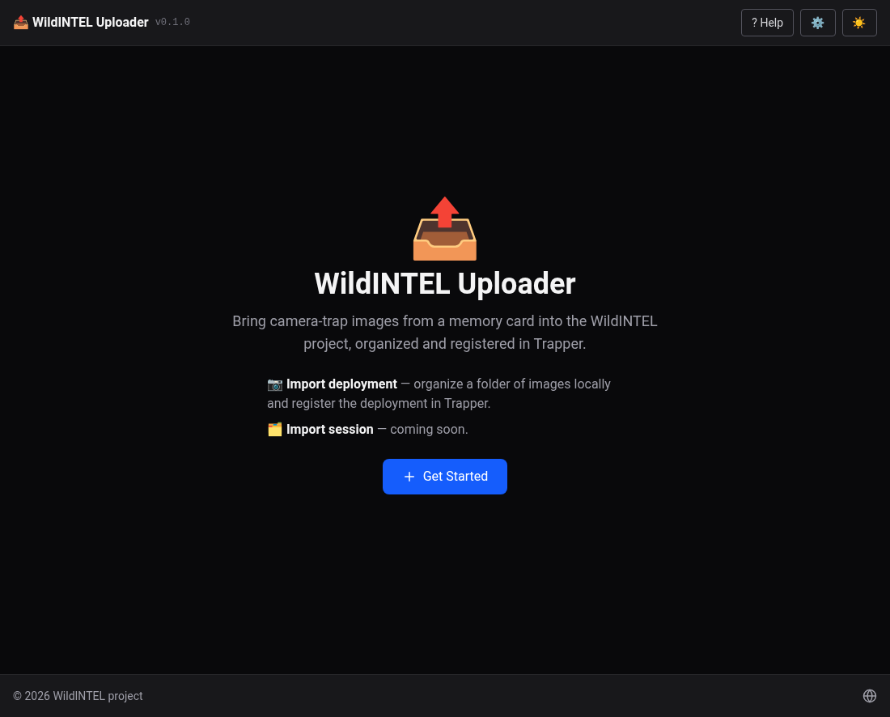
Before you start using the application it has to be configured. To do so, press ⚙️ Settings (top right) and fill in the Trapper server, username and password — see Settings; you can test them right there. Also fill in who owns the images (Preprocessing › Authorship) if you are going to import some.
2. Settings¶
Press ⚙️ Settings. It has its own sections on the left; one Save saves them all, and a red dot marks a section with an invalid value.
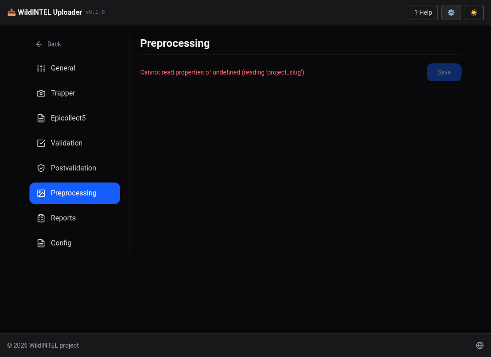
General¶
- Images folder — where the collections folder lives. Blank uses
Documents/wildintel-uploader; a path must be absolute (or start with~). - Workers — how many images are validated and preprocessed at once. Up to the number of processors of your machine pays off; the default is that number, up to 4.
- Log level — how much the app logs (
ERROR,WARNING,INFO,DEBUG). AtDEBUGit logs every step. - Log file — download it, or delete it. It rotates at 5 MB keeping the last 5. Attach it to any bug report.
- Update — looks for a newer version.
Trapper¶
The server's URL, and the username (its email — Trapper's import form only accepts
that) and password of your account. Test connection reports the research projects it can
see. The password is saved in settings.toml but never sent back to your browser.
Upload packages — Largest zip is the size, in MB, of the zips an upload makes: a deployment's images go up in zips of at most this size (500 by default, up to 5000), each with its own yaml.
Epicollect5¶
The Epicollect5 project the deployments' information will be imported from (see When was it collected?): its slug, the
name in its URL (five.epicollect.net/project/<slug>), and, only if the project is private, the client id and secret of
its API client, which you create at https://developers.epicollect.net. Test connection reads the project with what is typed — saved or not — and says its name and how many inputs
it has; a blank secret is the saved one. Below, the Mapping relates each field of a deployment to an input of the project's form. Epicollect5 has no input for a date and a time together, so the day and the time of the start and of the end are mapped apart, along with the revision.
Validation¶
Which of the folder checks the wizard shows. Each is an entry with a switch; turn off the ones you never want to see. They are all on by default.
Postvalidation¶
Which of the postvalidation checks the wizard shows, and what the ones that take a value mean:
| Setting | Default | |
|---|---|---|
| Tolerance | 1 hour | Leeway around a deployment's start and end for the image dates. |
| Sequence gap | 60 s | What a sequence is: a new one starts when the gap to the previous image is at least this. |
| Compared with | median | What this revision is compared to: the median or mean of the earlier ones, the last one, or the range they span. |
| Previous revisions needed | 2 | With fewer, the statistical checks are skipped. |
| Number of images / sequences / length of sequences | 50 % each | How different a value can be and still count as similar. |
Preprocessing¶
What a new import does to the images — the wizard lists it before preparing, and a run can still switch each step off.
- Steps — rename, resize, add metadata.
- Resize width — 2400 px by default; wider images are shrunk to it, narrower ones left alone.
- Authorship — Owner, Publisher and Coverage (where the images were taken; blank uses the deployment's location), written into each image. A blank owner or publisher is written as "Unknown".
- License — picked from a list: CC0 (any use, no requirements), CC BY (any use with attribution) or CC BY-NC (with attribution, not for commercial purposes), the default. What is written into each image is the license's URL, shown beside each name.
- Dates — Ignore summer time, and Convert the dates to UTC.
Reports¶
Every validation, postvalidation, preprocessing and repair leaves a report of what it checked and did, image by image. The step shows it right below its results — the same file you can download, so what you see is what is kept:
- the checks, with how many images passed and how many failed each;
- the images that failed, with the check and why — IMG_0087.JPG · Duplicate images · same content as IMG_0087 (copy).JPG — that can be narrowed to one check, and are shown 100 at a time;
- Download CSV — a row per image and check, to open in a spreadsheet — and Download JSON, with everything: when it was made, the folder, the parameters it was run with and every entry.
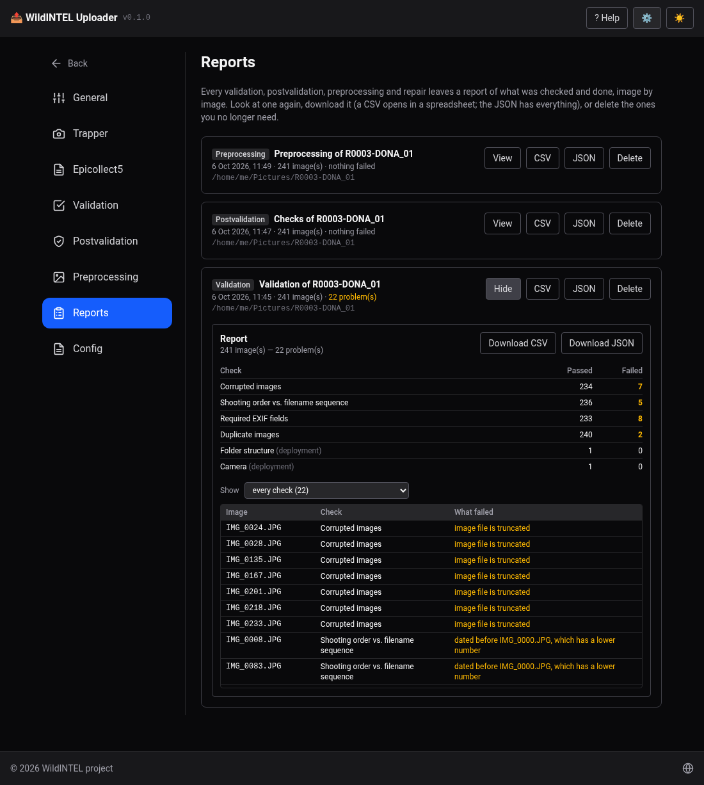
What each report holds:
| Report | An entry for | Says |
|---|---|---|
| Validation | each image and check — corrupted, shooting order, EXIF fields, duplicates —, and the folder for the structure and camera checks | The ones that passed too, so the report says what was checked, not only what failed. |
| Postvalidation | the deployment for the naming and statistical checks, and each image for its date and camera | Why a check failed — 241 images — like the previous revisions (median 238, ±50 %). |
| Repair | each image and check, and each metadata file | What the repair wrote and what the images passed, as the new seal says — and the preprocessing checks: names, size, metadata. |
| Preprocessing | each image | What was done — IMG_0001.JPG → R0003-DONA_01__20240904_1.JPEG; date 2024-09-04T11:10:00+00:00 (exif); resized — and the ones that were skipped, with the reason. |
Settings › Reports lists all of them, newest first, with View, CSV, JSON and Delete (which
asks again). They are kept in the reports folder of the images folder until you delete them. A check you run twice
makes two reports.
Multiple configs¶
The application lets you define several different configurations: + adds one with the default values, and choosing one makes it the active one — handy to switch between two Trapper servers (a test one and the real one) or two sets of authorship. Each can be downloaded, and its folder opened.
3. The task menu¶
Once it is configured, the menu is where you choose what you want to do:
| Task | What it's for |
|---|---|
| 📷 Import deployment | Check one folder of images and organize it in the collections folder. |
| 🗂️ Import session | The same for a folder holding several deployments, one subfolder each. |
| ☁️ Upload deployment to Trapper | Send deployments already kept locally to Trapper. |
| 🧰 Utils | Maintenance of the local collections: Sync local collections brings the collections folder up to date with what Trapper already has, and Repair local deployments checks which deployments are still valid and writes the metadata files of the others again from their folders. |
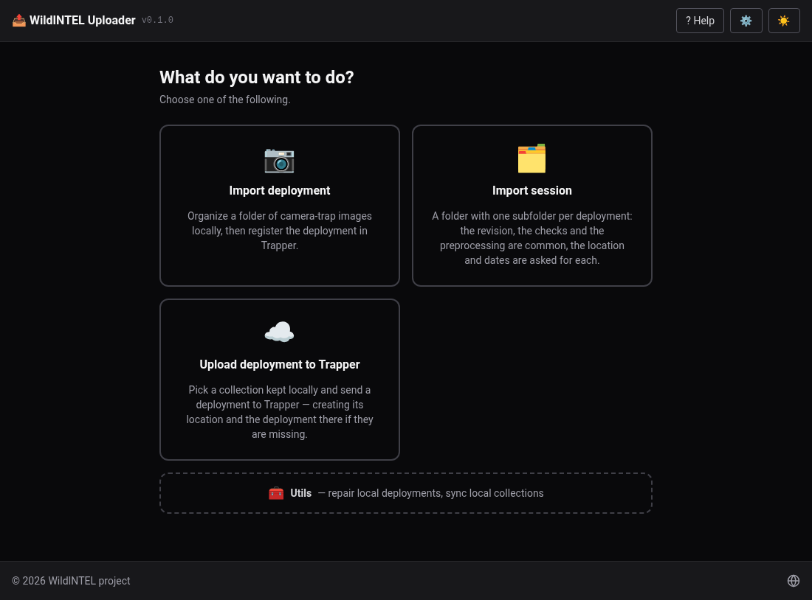
Reports are in the settings — Settings › Reports.
The usual order is Import (or Import session) first, then Upload. Sync is for when Trapper already holds deployments that this computer's collections folder doesn't know about (Utils › Sync).
The title in the top bar takes you back to the welcome screen at any time; ? Help opens this documentation, and the sun/moon button switches between dark and light.
If the app was closed in the middle of an import, the first thing you see is the list of unfinished runs — see Unfinished runs.
4. Unfinished runs¶
An import saves its progress as you go. If you close the app, or it fails, the next time you start it the first screen lists the unfinished runs — the folder, the research project and when it was started — each with Resume and Discard. Resuming takes you back to the step after the folder was chosen. Passwords are never saved with a run.
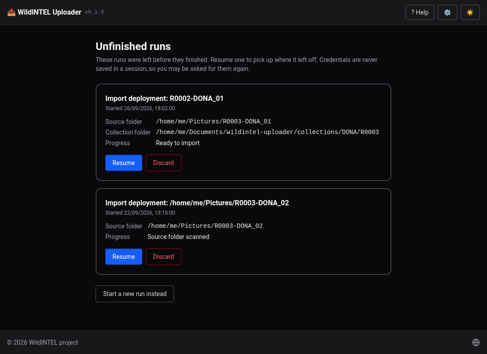
5. Import a deployment¶
Press 📷 Import deployment. A wizard of four stages — the bar at the top shows where you are, and a stage can have steps of its own, which open one after the other. Each stage is done (a tick and a summary, with a pencil to go back and change it), open or locked until the ones before it are done. Back and Continue move between them.
| Stage | What it asks |
|---|---|
| 1. Images | Which folder, which checks, and how the images did. |
| 2. Origin and dates | Where and when the images were taken, and what you know of the camera and the site. |
| 3. Check details | The deployment's names and dates, and that the images fit them. |
| 4. Prepare and save | The preprocessing, and saving the deployment in the collection. |
Stage 1 — Images¶
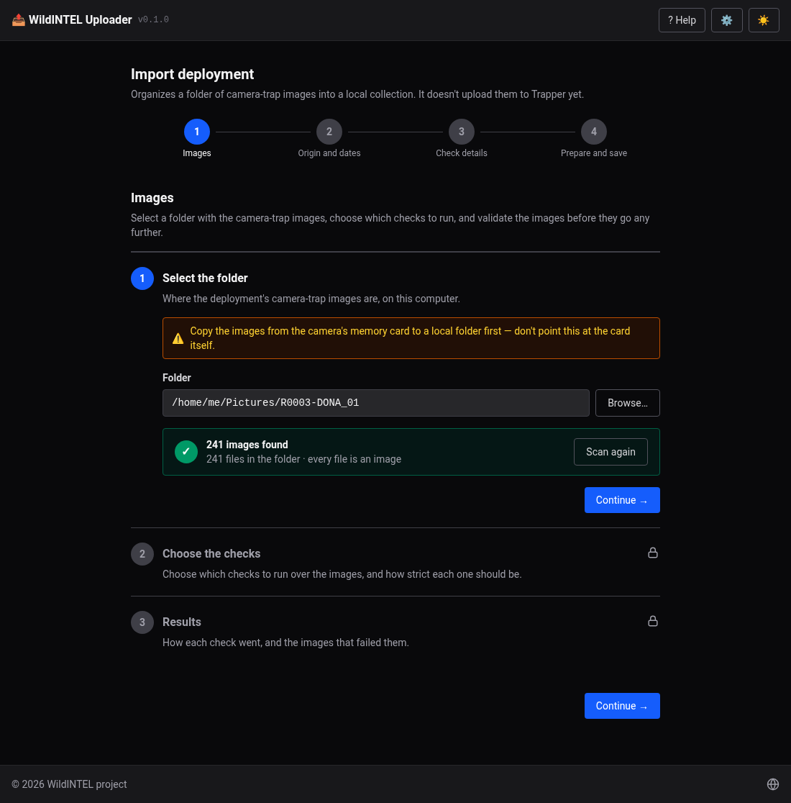
1. Select the folder. Press Browse… and choose the folder with the deployment's images (or type its path), then Scan. The scan only counts: how many files there are and how many of them are images (by their extension) — 241 images found — with a warning if the folder is empty or has no images. It doesn't open them, which is why it is instant however many there are: reading the images is what the next steps are for. Copy the images off the camera's memory card first; don't point the app at the card.
2. Choose the checks. Checks over the images alone, before anything is known about the deployment:
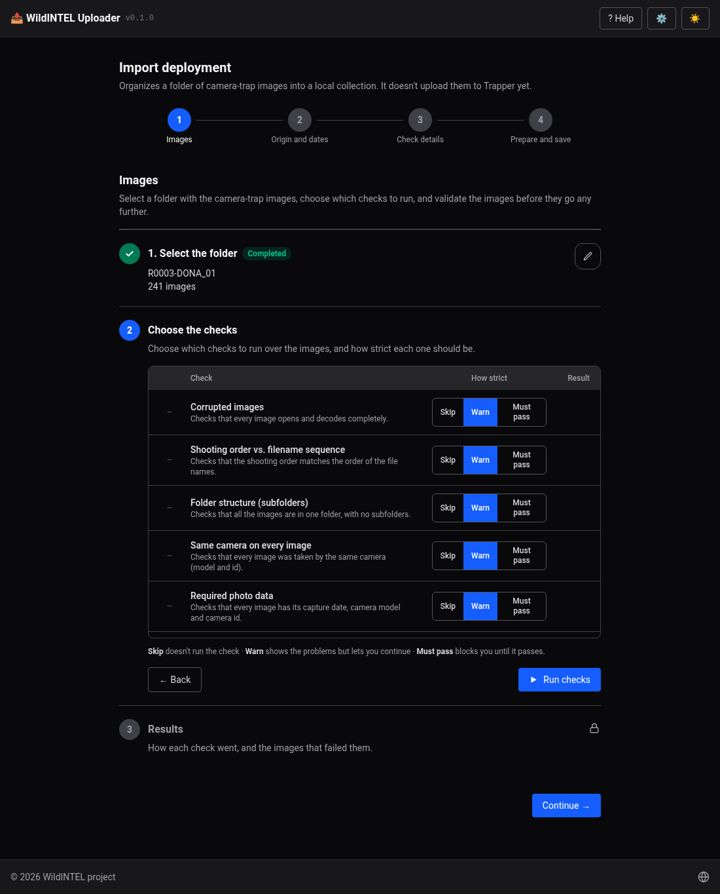
| Check | Looks for |
|---|---|
| Corrupted images | Files that aren't readable images. |
| Shooting order vs. filename sequence | Images whose order by name differs from their order by time. |
| Folder structure | Subfolders inside the deployment's folder. |
| Same camera | More than one camera model or id among the images. |
| Required photo data | Images missing the capture date, camera model or id. |
| Duplicate images | Files with the same content. |
For each check you choose how strict it is: Skip doesn't run it, Warn shows the problems but lets you continue, Must pass stops you from going on while it fails. The ones that are turned off in the settings are not shown. Press Run checks.
3. Results. A small dashboard: when it was last run, the downloads of its report and four figures — the valid images, the images with issues, the checks run and the ones with problems. Under them, one row per check with its status (✔ passed, ⚠ failed, ✘ failed and Must pass) and how many images failed it.
Open a check that failed to see which images failed it: as pictures, each with what is wrong with it (No date, Duplicate, Out of order…) and when it was taken, or as a list. You can search by file name, filter by the kind of error, sort by name or by date, and go through the pages; View details opens the image bigger with everything the report says of it. A check of the whole folder (the structure, or the camera) has no pictures: it says what it found. Run again repeats it.
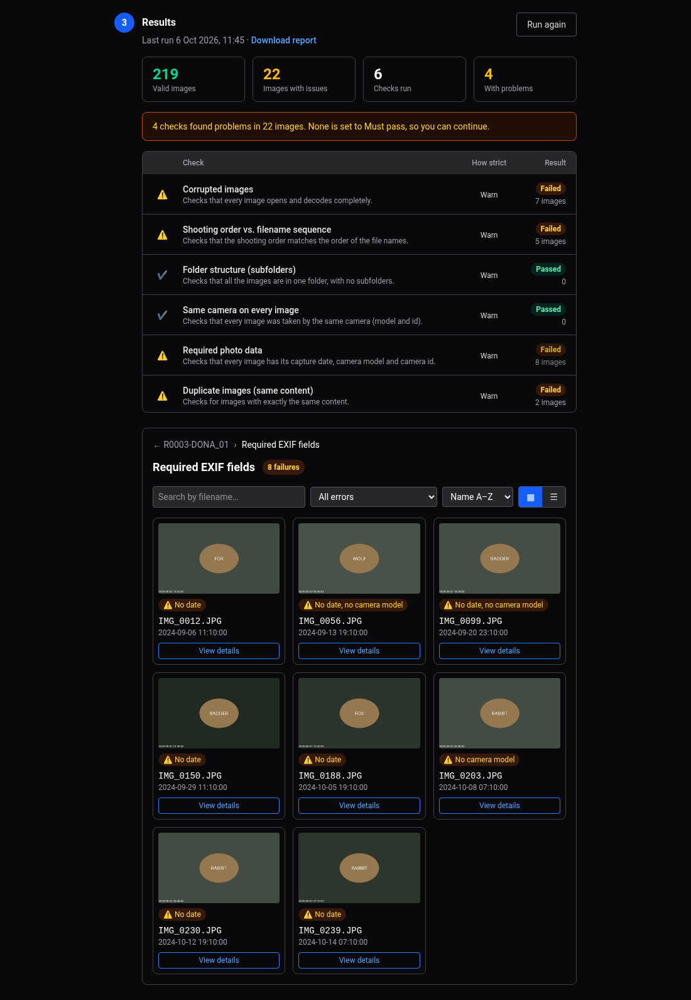
Reading the camera's model and id uses ExifTool, because the serial number of a camera trap lives in the manufacturer's own metadata. Without it the app falls back to the standard EXIF tags, which are less complete — it says which it used.
Stage 2 — Origin and dates¶
1. Where was it taken?
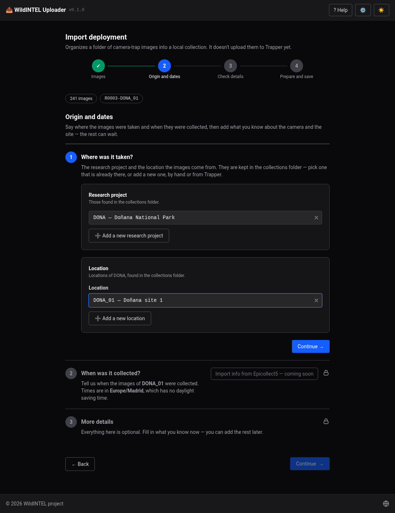
The research project and the location the images come from. They are kept in the collections folder; pick one already there, or add a new one:
- By hand — the project's name and acronym (which names its folder); a location's id, name, latitude, longitude, coordinate uncertainty, timezone and whether its cameras ignore summer time.
- From Trapper — pick the project, or its locations, from your Trapper account and they are copied here, with their coordinates and timezone. The app connects by itself with the account saved in the settings — it never asks for the credentials again; if there isn't one, it says so.
2. When was it collected?
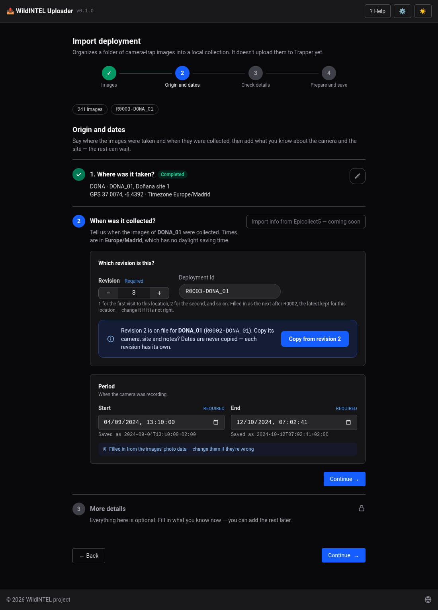
The revision starts as the next one expected for that location — one more than the highest kept — and says
so; change it if needed, and the deployment id is built (R0003-DONA_01). The period — start and end, as
the camera's local time — is read from the images' EXIF (the earliest and the latest capture date) and can be changed.
If an earlier revision of this deployment is kept, the app offers to copy from it its camera, site and notes — the dates are never copied. If the deployment already exists in the collections folder you are told, and the import would be refused as it would mix two sets of images: choose another revision or location, or move that folder away.
A timestamp log can set the dates
If the collection has a <COLLECTION>_FileTimestampLog.csv — the file wildintel-tools asks
for beside a collection's deployments — the dates are taken from it instead of from the
images, and this step says so. In an Import session, the same applies to each deployment
that has a row in it.
Import info from Epicollect5 (top right of this step) fills in the period, the camera, the site and the notes from the project's form saved in Settings › Epicollect5. In that form each row is one deployment: the app looks for the entry whose location id is the location you chose and whose revision is the one above (if the revision isn't mapped, the location is enough). The location's own data — its id, name and coordinates — are never taken from the entry, and the camera model and id only complete what the images didn't give. The day and the time of the start and the end come in two questions; a day with no time takes the time the images gave on that day, or the whole day (from its first second for the start, to its last for the end). If there are several entries, you pick one. It needs the location id mapped in the settings, and it reads the project with the client saved there, so it may be refused for a while if Epicollect5 limits the requests.
3. More details.
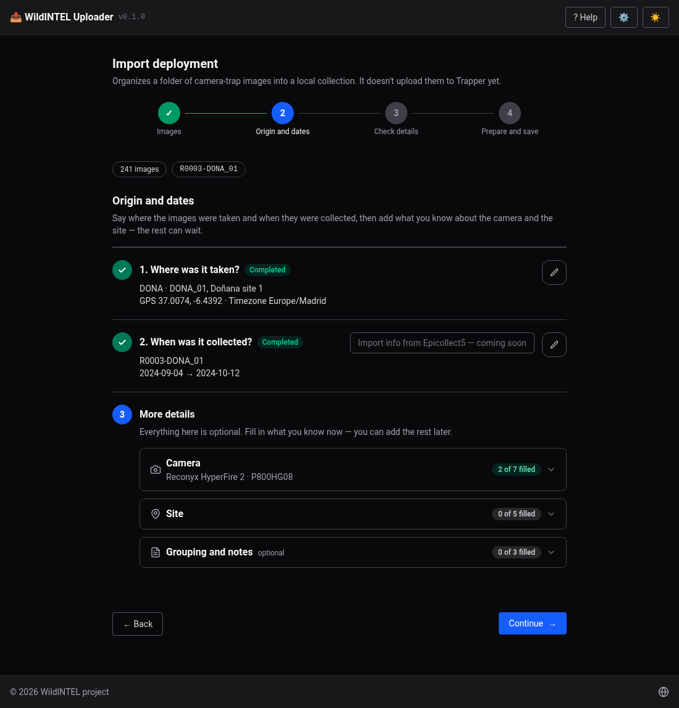
Everything here is optional, and can be completed later in Trapper. The form follows Camtrap DP's deployment table — the same fields as Trapper's own deployment form. Each section is a card that says how many of its fields are filled in; open it to fill it in.
| Section | Fields |
|---|---|
| Camera | Camera id and model (read from the images when they all share them), delay between triggers, height or depth (not both), tilt, heading, detection distance. |
| Site | Feature type (road, trail, burrow, water source…), habitat, set up by, bait used, timestamp issues. |
| Grouping and notes | Deployment groups, tags, comments. |
The form is validated as you type, in the browser and again in the server: dates in order, latitude and longitude in range, tilt between −90 and 90, heading between 0 and 360.
When you continue, the deployment is added to the collection's timestamp log.
Stage 3 — Check details¶
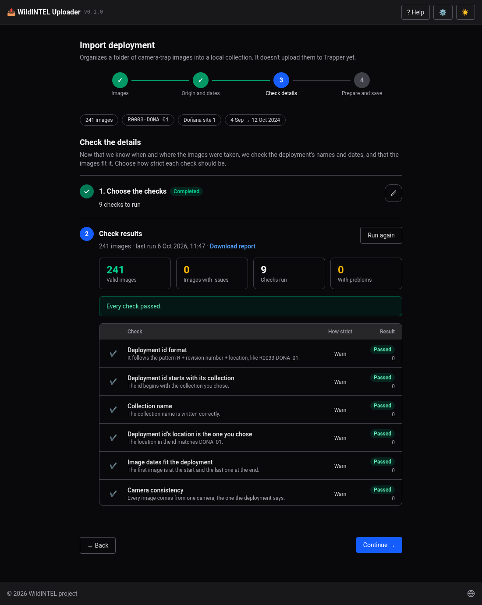
Now that you know when, how and where the images were taken, new checks are run: the deployment's names and dates, and the images against it:
| Check | Looks for |
|---|---|
| Deployment id format | R0033-DONA_01. |
| Deployment id starts with its collection | R0033-… belongs to R0033. |
| Collection name | R0033. |
| The id's location is the one chosen | The location in the id is the one from stage 2. |
| Image dates fit the deployment | The first image at the start, the last at the end, within the tolerance. |
| Camera consistency | The camera in the images is the one in the details. |
| Number of images | Like the previous revisions of the location. |
| Number of sequences | Like the previous revisions of the location. |
| Length of the sequences | Like the previous revisions of the location. |
The last three are statistical: a location is visited again and again, so what earlier revisions looked like says what this one should — about as many photos, about as many sequences, as long. A camera that fired non-stop, or died early, stands out, and is worth a look before it is uploaded. They need at least the previous revisions needed of the settings, or they are skipped; what a sequence is, what "similar" means and what it is compared to are the Postvalidation settings.
It has the same two steps as the images' checks: choose how strict each one is (skip, warn, must pass), press Run checks, and read the results — when it was run, the figures, the table, and, opened from a check, the images that failed it (Out of range, Other camera) as thumbnails. The report downloads.
Stage 4 — Prepare and save¶
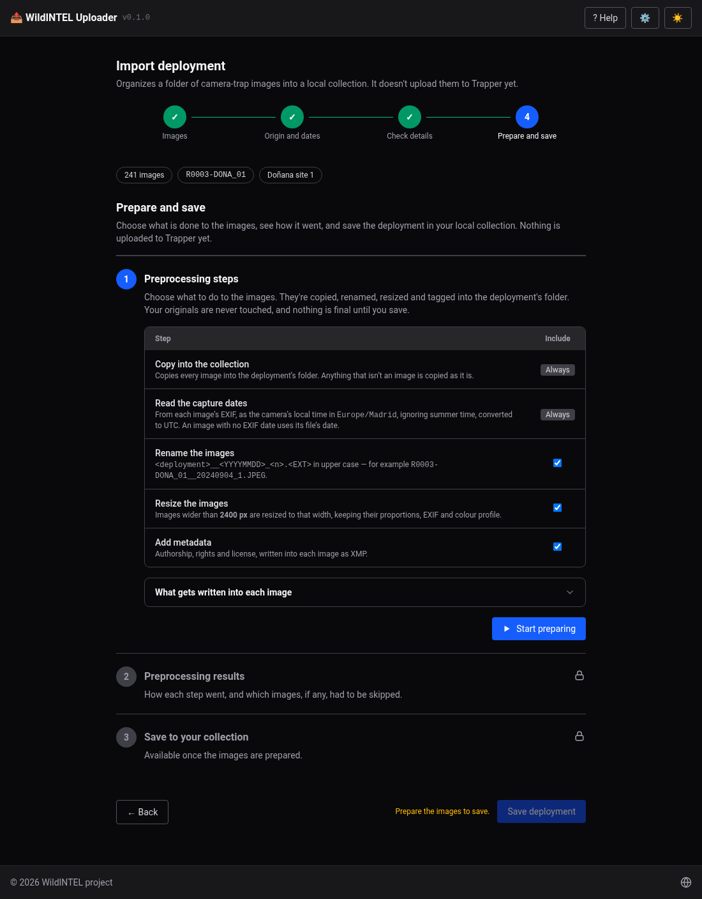
1. Preprocessing steps. Choose what to do to the images; the table says what each step does. Press Start preparing.
- Copy into the collection — always. Anything that isn't an image is copied as it is.
- Read the capture dates — always. From each image's EXIF, as the camera's local time in the location's timezone — ignoring summer time and converting to UTC, as the settings say. An image with no EXIF date uses its file's date.
- Rename the images —
<DEPLOYMENT>__<YYYYMMDD>_<n>.<EXT>in upper case,.jpgbecoming.jpeg, e.g.R0003-DONA_01__20240904_1.JPEG; n is the image's place in file-name order. - Resize the images — to the width of the settings, keeping proportions, EXIF and colour profile. Unlike wildintel-tools, the resized image is the one that is kept.
- Add metadata — authorship, rights and license, written into each image as XMP with ExifTool: Creator, Owner, Publisher, Rights, License, Coverage and the hash of the original and of the image kept, so each can be traced back. It is switched off, with the reason given, if ExifTool isn't available. Check the owner and publisher in the settings first: if they're blank, the step says so.
Each optional step can be switched off for this run (its checkbox). Its values come from the Preprocessing settings. The images go into the deployment's folder in the collections folder; the originals are never touched. Nothing is final yet: you can go back, change something and Prepare again — the folder is simply redone.
2. Preprocessing results. The images processed and skipped, a status for each step and, opened from it, the skipped images as thumbnails. The report says what was done to each image. Continue to save goes on.
3. Save to your collection.
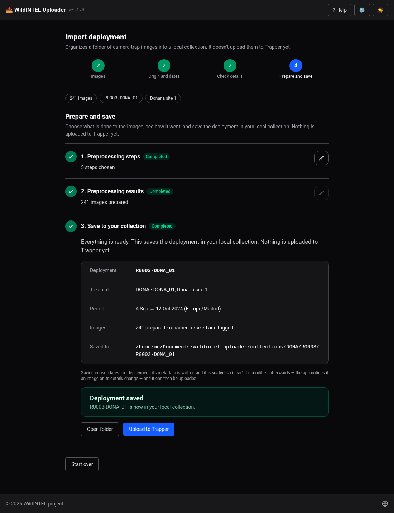
The images are ready, so this step consolidates the deployment: press Save deployment and its
deployment.json is written and the deployment is sealed. From then on it can't be modified — the app notices if an image
or its details change — and it can be uploaded.
A good save says where the deployment was kept, and offers:
- Open folder in the file explorer.
- Upload to Trapper — straight to the upload page with the research project and the collection already chosen.
- Start over.
What gets written next to the images¶
| File | Content |
|---|---|
deployment.json |
The details of stage 2. |
images.json |
Per image: its name (and the original, if renamed), when it was taken — the camera's wall clock and the instant —, the camera, size and pixels, and hashes. It lets later checks, and the statistics of the next revisions, work without opening the images again. |
preprocessing.json |
What was done to each image, with its hashes: source_hash of the original, hash of the image kept, final_hash of the file with its metadata. |
seal.json |
Which validation and postvalidation checks the deployment and each image passed, and the hash of everything. |
The seal protects against changes by mistake: if an image or deployment.json is changed
after the import, the seal no longer matches, and the app can tell. It is not a signature —
whoever edits the files on purpose could seal them again.
6. Import a session¶
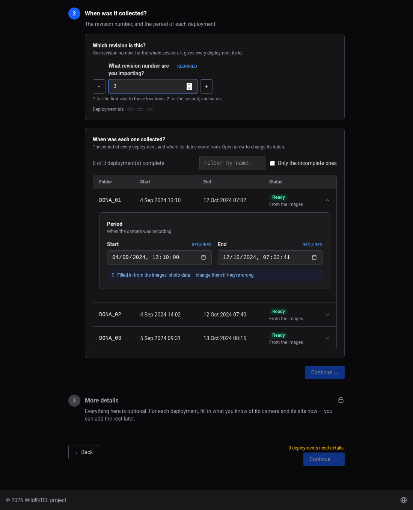
Press 🗂️ Import session. A session is a folder with one subfolder per deployment — the usual way a field trip's images come home. The revision, the checks and the preprocessing are the same for all; the location, dates and camera are asked for each deployment.
The four stages are those of Import a deployment, with the differences below.
- Images — Session folder: choose the folder and Scan; its subfolders are listed, each with its images and warnings, and you tick the ones to import. Then Choose the checks and Results: the checks run over every chosen deployment, and the result is shown by folder or by check (with Only folders with problems). Leave them out drops the folders that failed from the session; Continue with N folders goes on.
- Origin and details — Where were they taken?: one research project for the whole session, and a location for each
deployment (the ones whose folder name matches a location of the project are suggested). No two deployments can share one.
When was it collected?: first the revision, common to the session, which names all the deployments
(
R0003-DONA_01,R0003-DONA_02…); then a list of the deployments with their periods — read from the images, or from the timestamp log —, how many are complete ("12 of 40 deployments complete"), a filter by name and Only the incomplete ones; open a row to change its dates. More details: the camera and the site of each, with Fill in from the previous revision for the ones that have one. - Check details — the deployments' checks, for each deployment, by folder or by check.
- Prepare and save — one list of preprocessing steps for all, then each deployment in turn, with its own result. If some fail, Import the N left resumes with the ones that are still pending. Saving seals each of them.
When it ends, Upload to Trapper goes to the upload page with the collection chosen.
If the session folder has a <COLLECTION>_FileTimestampLog.csv, the dates of each deployment with
a row in it come from there, and the details say so.
7. Upload a deployment to Trapper¶
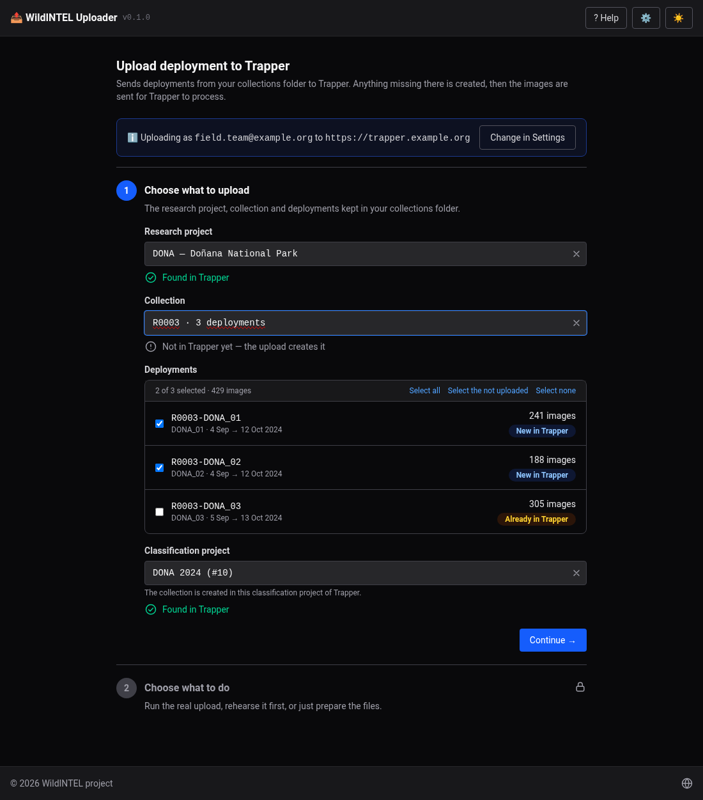
Press ☁️ Upload deployment to Trapper. It sends deployments kept in the collections folder. For each one it does what wildintel-tools did in three commands:
- creates the location in Trapper, from the deployment's coordinates, if the research project doesn't have it, and the deployment, from its details;
- packs the images in zips and the yaml that describes them — what was recorded when —, splitting in several parts when a zip would be larger than the limit;
- uploads each zip and its yaml, and tells Trapper to process them into a collection.
The deployment must have been imported with the wizard — the yaml needs the dates its
preprocessing.json records. One that wasn't says "Not preprocessed — import it again through the
wizard before uploading it", and can't be ticked.
A note at the top says which Trapper account is used: the one saved in the settings (Change in Settings takes you there; Test connection is in Settings › Trapper). The page is a wizard of its own.
Step 1 — Choose what to upload¶
- Research project — those kept in the collections folder.
- Collection — and under it a table of its deployments: how many images, its dates, whether Trapper already has it (New in
Trapper or Already in Trapper) and the day it was uploaded, if it was (from its
upload.json, a local note). The ones left to send start ticked; Select all, Select the not uploaded and Select none, or the box in the table's header, change the choice. As soon as the research project and the collection are chosen, a message says whether it is found in Trapper and whether the collection is already there, so the upload adds to it, or the upload creates it. - Classification project — the collection is created in one of Trapper's classification projects for the research project: pick it (or, if there is only one, it is used). Without a Trapper account, type its pk.
Step 2 — Choose what to do¶
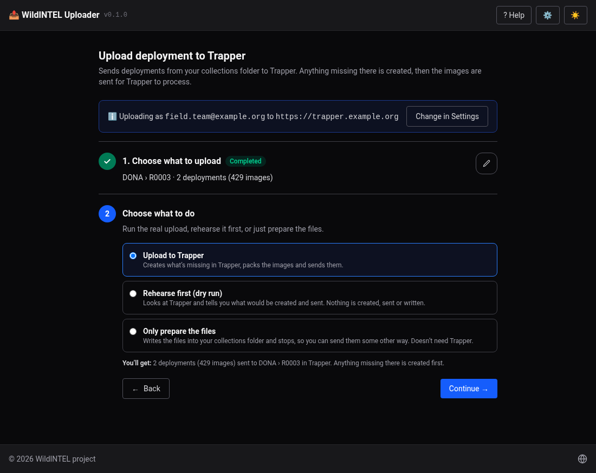
| Mode | What it does |
|---|---|
| Upload to Trapper | The real thing. |
| Rehearse first (dry run) | Looks at Trapper and says what would be created and how the images would be packed. Nothing is created, sent or written. |
| Only prepare the files | Writes the zips, the yamls and the collection's _deployments.csv and leaves them, to send some other way. Needs no account if the research project was filled in from Trapper. |
The size of the zips is a setting: Settings › Trapper. The page says what you will get before you go on.
Step 3 — Upload¶
Press Continue. The upload shows in three phases — Set up Trapper, Send the images (with a bar, the amount sent and the
time left) and Trapper processes them, which happens on Trapper's side and needs no waiting — and, under them, how many
deployments and images have been sent and a row for each deployment with its state. A deployment's steps (connect, classification, location, deployment, package, csv, upload,
process, wait) are each marked as running, done or skipped. The steps that made or found something in Trapper — the location, the deployment and, at the end, the
collection — show a link to its page in Trapper (for example https://trapper.example.org/geomap/deployment/detail/47/),
to check there that it was created or updated. A dry run links to what is already there; what it would create has no page yet. Stop ends it —
what is already in Trapper stays there. When one fails, the others go on, and the summary says so: "2 deployment(s) uploaded, 1
failed." Upload more starts over.
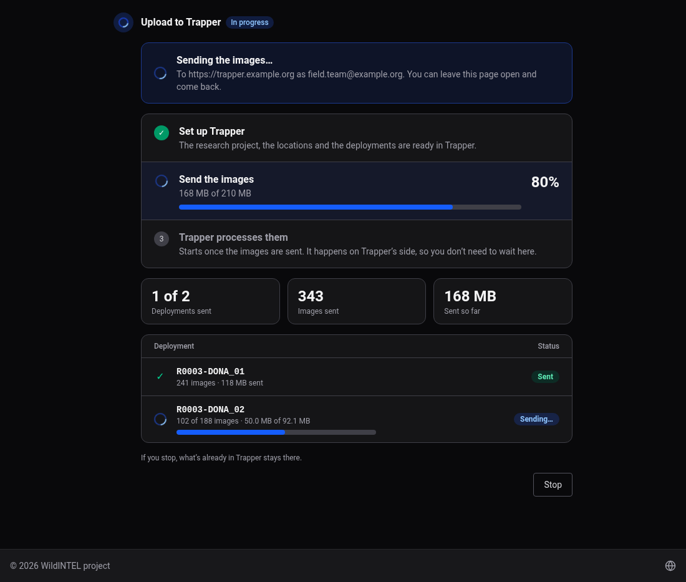
The zips and yamls are written under <images folder>/packages/<research project>/. A deployment
that was uploaded gets an upload.json, which is what the list uses to say so.
8. Utils¶
Press 🧰 Utils, under the task cards of the menu. It holds the maintenance tasks of the local collections; pick one, and Back returns to the list.
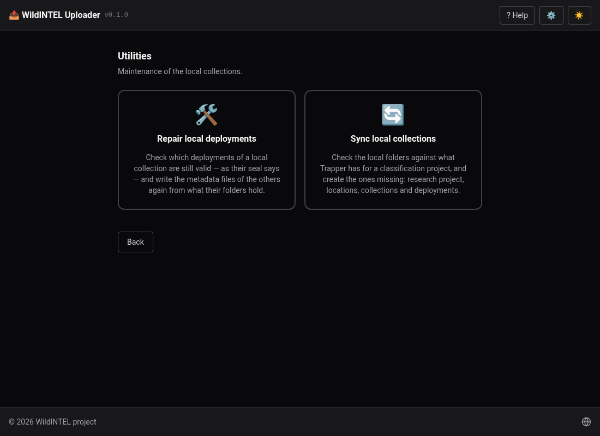
Sync local collections¶
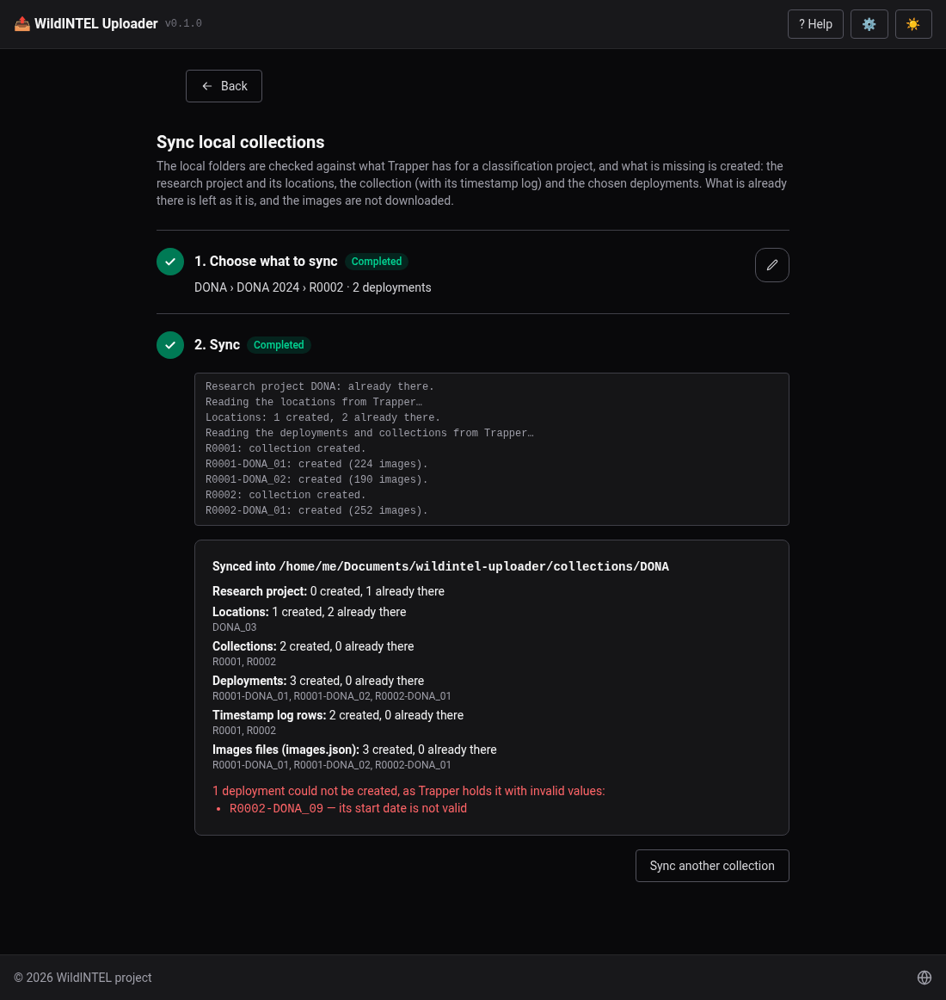
Press 🔄 Sync local collections. Use it when Trapper already has deployments that the collections folder doesn't — say, imported years ago, or from another computer — so that the statistics of the next revisions can compare with them, and the folder reflects what Trapper holds.
- Pick a research project, then one of its classification projects.
- Pick a collection (those of the classification project whose name starts with
R) and, under it, the deployments to sync — with Select all. - Tick Also download the images from Trapper if you want them too (see below).
- Press Sync.
What is missing is created, one deployment at a time, and a live log says what is happening:
- the research project (
research_project.json) and itslocations.json; - the collection (with its
collection.jsonand<collection>_FileTimestampLog.csv); - each chosen deployment's
deployment.json, in the collection its id starts with, and animages.jsonmade from what Trapper holds for its images (names, when they were taken, observations).
What is already in the folder is left as it is, whatever Trapper says. Nothing is changed in
Trapper, and no image is downloaded unless you ask for it — so there is no preprocessing.json, and the size,
pixels and hashes are missing from images.json, which is marked "source": "trapper". A
deployment synced this way is read-only for the app: what Trapper holds isn't modified here.
Downloading the images¶
With Also download the images from Trapper ticked, each chosen deployment's images are also downloaded, four at a time, into
its folder — named as Trapper names them (R0003-DONA_01__20240901_1.JPEG), the file Trapper holds. A deployment can have
thousands of images, so it can take long and need a lot of disk space. The log says how far each deployment is.
- The files come through the classification project you picked: Trapper only gives the access token of a file — private ones too, for an account that can see them — in the media of a classification project, so an image that isn't in a collection of that project can't be downloaded. The result says how many of each deployment weren't.
- What is already in the folder is kept, so syncing again completes a download that was stopped, or retries the images that failed. A file is written under a temporary name and moved into place when whole: a stop never leaves half an image.
- The deployment is still a synced one: its images aren't preprocessed, renamed or sealed, so it can't be uploaded or repaired from here.
The result lists, per kind, what was created and what was already there, the deployments no collection of the classification project claims, and any that Trapper holds in a way that isn't a valid deployment — with the reason — and were left out.
Repair local deployments¶
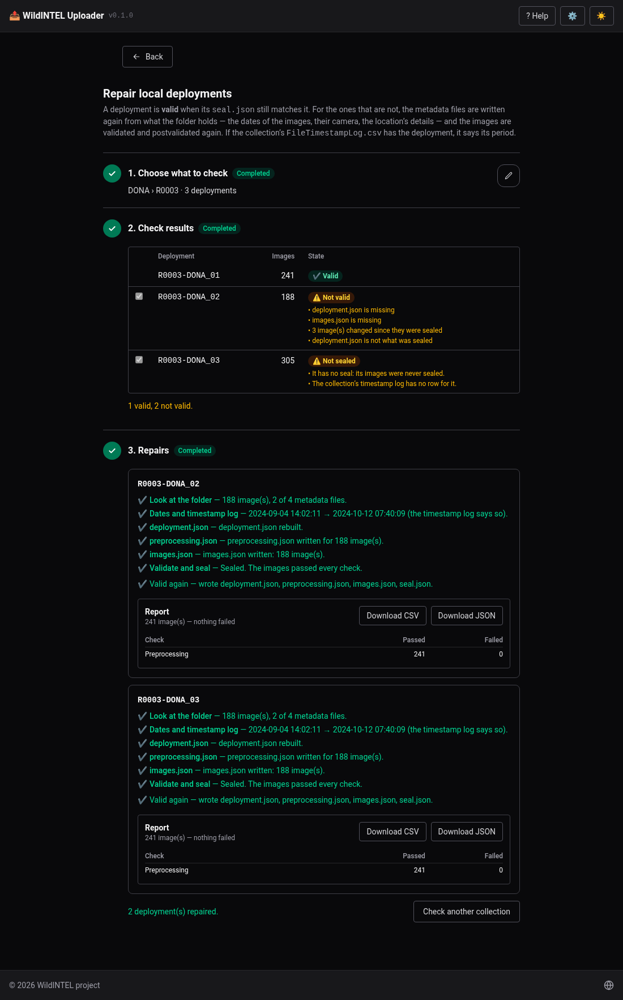
Press 🛠️ Repair local deployments. Use it when a deployment of the collections folder has lost its metadata files, or its images were touched — so it no longer matches its seal — and you want it back in working order.
- Pick a research project and one of its collections, both from the collections folder.
- Press Check the deployments. A deployment is valid if its
seal.jsonstill matches it: every image and itsdeployment.jsonare as they were sealed. Anything else — no seal, changed or missing images, a missing or unreadable metadata file — is not valid, and the table says what is wrong. A deployment synced from Trapper is not touched. - The ones that are not valid start ticked (Select all, Select the not valid and Select none change it). Press Repair.
Each deployment is repaired in turn, with its steps shown:
- Dates. The capture date of every image is read from its EXIF, as the camera's wall clock, and the deployment's period
is decided: if the collection's
<collection>_FileTimestampLog.csvhas a row for it, the log says it, whatever the images say; otherwise the period is the one thedeployment.jsonthat is left has, or else the one of the images, and the row is added to the log. The log itself is never rewritten but to add that row. deployment.json— what is left of it, plus the location's details (name, coordinates), the camera of the images, and the period. If something required can't be known — the location has no coordinates, say — the repair stops and says so.preprocessing.jsonandimages.json— one entry for every image in the folder, with its date, hashes, camera and size. What can't be known is left empty: the original name of a renamed image, unless an earlierpreprocessing.jsonsays it, and the hash of the original, unless the image's XMP metadata does.seal.json— the images are validated and postvalidated again, as in the wizard, and sealed with the result (marked as recovered). A deployment is sealed even if its images fail a check: the report says which.
A report is written, and shown, with what was written and what the images passed — and four checks of the
preprocessing the folder can answer: the names (<DEPLOYMENT>__<YYYYMMDD>_<n>.<EXT>, with the day of the capture date and each
number once), the size (not wider than the width of the settings), the XMP metadata (needs ExifTool) and that the images are
still the ones that were preprocessed. What the preprocessing did — the resizing, the renaming — can't be checked beyond that:
the originals are gone.
9. Troubleshooting¶
- "Backend not reachable — is the server running?"
- The red bar at the top. The window that started the app was closed, or it crashed. Start the app again, and look at the log (Settings › General) if it recurs.
- The browser doesn't open
- Open http://127.0.0.1:8769 yourself. If that port was busy the app took the next free one:
the window that started it says which (
Server on http://127.0.0.1:8770). - "Incorrect Trapper username or password"
- The username is the email of your account. Check it in Settings › Trapper and press Test connection.
- "Could not connect to the Trapper server"
- The URL is wrong — it needs
https://and no trailing path — or the server is down or unreachable from your network. - The metadata step is greyed out: "ExifTool is not installed"
- The downloadable app ships its own ExifTool. Running from the source code, install it
(
sudo apt install libimage-exiftool-perl,brew install exiftool) — or switch the step off. - "This deployment already exists"
- A deployment with that id is already kept in the collections folder. Choose another revision or location, or move that folder away; importing would otherwise mix two sets of images.
- A location has no timezone
- Added by hand without one, or synced from a Trapper location that has none. Edit it in the Origin step; the app won't guess it.
- "Not preprocessed — import it again through the wizard"
- The deployment has no
preprocessing.json: it was copied by hand, or synced from Trapper (which already has its images). Only deployments imported with the wizard can be uploaded. - The upload says Trapper refuses the package
- Trapper checks the package's timezone and summer-time setting against the location's. If you changed them for the location in Trapper, they must be the same here — edit the location in the Origin step.
- The upload fails with "Trapper's uploader accepted the login but gave no session"
- The uploader's login answered without the session it should hand out. The message includes what Trapper said: send it to the Trapper administrator, or attach it to a bug report.
- Files ending in
_exiftool_tmpin a deployment's folder - ExifTool writes the metadata of each image through a temporary file; one it was interrupted in (the app stopped in the middle of an import) is left behind. The app removes them when the metadata step ends, or fails, but not if it was killed: delete them, and import again.
- An image was skipped
- The import lists skipped images with the reason, and goes on with the rest. A corrupted file is the usual cause; the Corrupted images validation finds them before importing.
- Reporting a problem
- Set the log level to
DEBUG(Settings › General), repeat the steps and attach the log file to the report at github.com/wildintelproject/wildintel-uploader/issues.